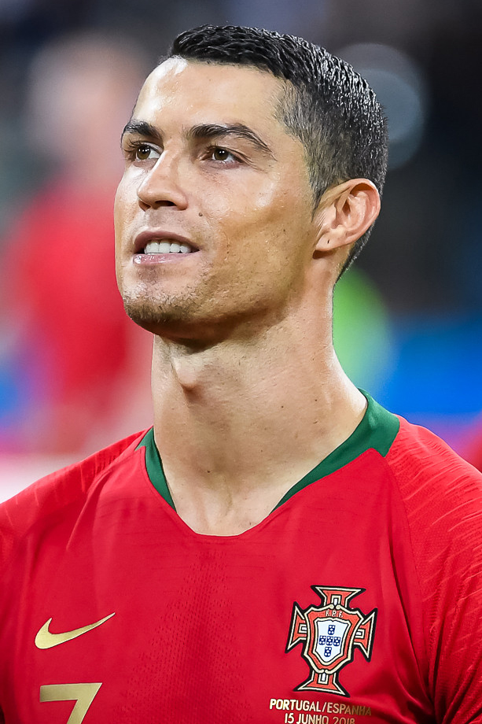

One of the Greatest Football Players of All Time
Cristiano Ronaldo dos Santos Aveiro was born on February 5, 1985, in Madeira, Portugal. He is widely regarded as one of the greatest football players in history. Ronaldo began his professional career with Sporting CP before joining Manchester United in 2003, where he gained international recognition for his exceptional talent and goal-scoring ability.
Ronaldo has won league titles in England, Spain, and Italy. His dedication, discipline, and relentless pursuit of excellence have inspired millions of fans worldwide. Beyond football, he is known for his charitable work, fitness, and leadership both on and off the field.
Cristiano Ronaldo's impact on football extends far beyond trophies and records. He is admired for his work ethic, determination, and ability to perform at the highest level for nearly two decades. His journey from a small island in Portugal to becoming a global sports icon serves as an inspiration to aspiring athletes around the world.